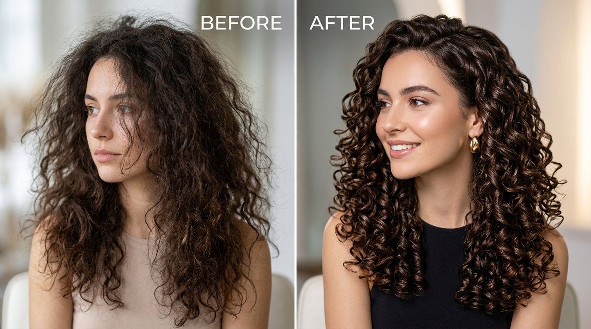
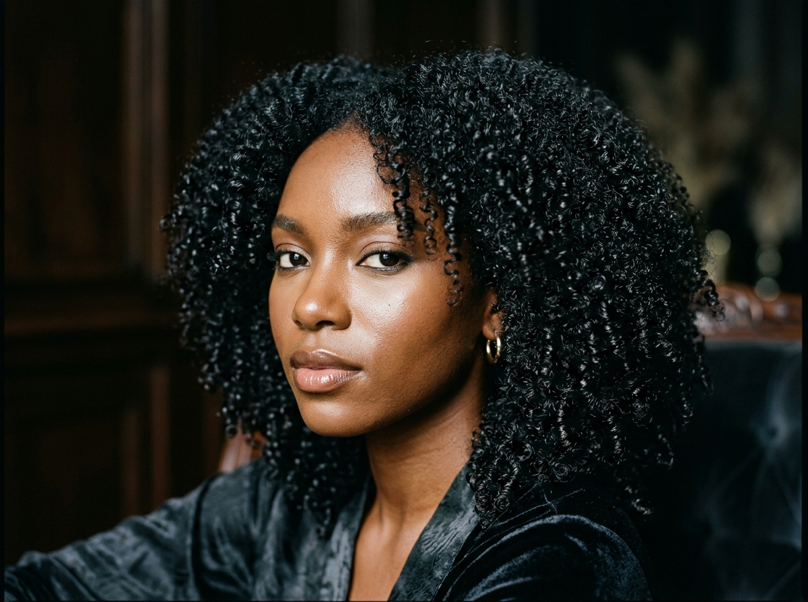
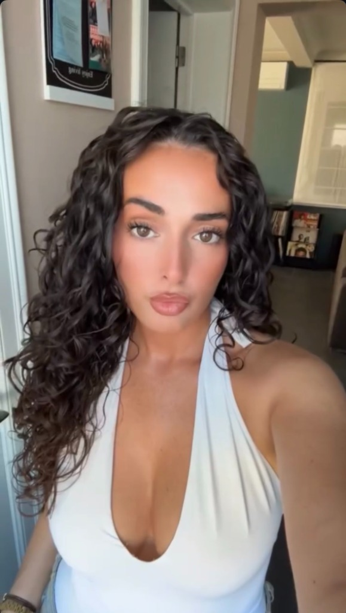

Gespecialiseerd in krullend en getextureerd haar. Ontdek op maat gemaakte droge krulsnitten, diepe hydratatie en ultieme veerkracht.
Embrace Your Natural Curls
Bij Curlyila geloven we dat geen twee krullen hetzelfde zijn. Met onze gespecialiseerde droogkniptechnieken, diepe stoombehandelingen en gepersonaliseerd routine-advies laten we jouw natuurlijke textuur stralen zoals nooit tevoren.
ONTDEK BEHANDELINGEN
Van Pluis & Onrust naar Italiaanse Perfectie
Met onze Signature Curly Cut en diepe stoomhydratatie transformeren we droge, ongedefinieerde krullen in veerkrachtige, glanzende ringlets zonder hittebeschadiging.
Echte Krulbelevingen
Bekijk hoe doffe, droge krullen transformeren in levendige, pluisvrije meesterwerken.

The Ultimate 1st-Time Curl Experience
Het complete 120-minuten verwen- en transformatiepakket voor wie voor het eerst bij Curlyila komt. We herstellen je natuurlijke krulpatroon, elimineren opgebouwde pluis en leren je de geheimen van een moeiteloze thuisroutine.
Waarom Kiezen Voor Krullenspecialist Curlyila?
Droog Knippen per Krul
Geen natte knipbeurten die je krulpatroon vervormen. We knippen droog, zodat elke krul op de perfecte natuurlijke plek valt.
Diepe Hydratatie & Stoom
Voedende, sulfaat- en siliconenvrije formules die droge krullen intens hydrateren en pluis definitief elimineren.
Krul Coaching & Advies
Je leert precies welke technieken, producten en routine jouw krullen thuis moeiteloos gedefinieerd en veerkrachtig houden.
Alle Krultypes (2A tot 4C)
Van zachte waves tot dichte afro coils: elke textuur krijgt een gespecialiseerde, op maat gemaakte aanpak.
Waarom We Nooit Nat Knippen
Het revolutionaire verschil tussen een reguliere kapper en een gecertificeerde Italiaanse krullenspecialist.
Traditionele Natte Knip
- Trekt krullen nat en recht waardoor krimpingsverschillen worden genegeerd.
- Veroorzaakt 'trapjes' en ongelijke happen zodra het haar opdroogt.
- Verbreekt natuurlijke krulbundels waardoor extra pluis ontstaat.
- Standaard producten met zware siliconen en uitdrogende alcoholen.
Curlyila Droge Krulsnit
- Geknipt in droge, natuurlijke staat: wat je ziet is direct het echte resultaat.
- Respecteert het unieke veerkracht- en krimppatroon van elke afzonderlijke krul.
- Stimuleert perfecte krulklontering en een ronde, harmonieuze coupe.
- 100% Curly Girl goedgekeurd, verrijkt met botanische stoomhydratatie.

Ciao, Ik ben Ilaria
Geboren in Italië en gepassioneerd door de natuurlijke schoonheid van krullend en getextureerd haar. Jarenlang zag ik hoe traditionele salons krullen behandelden als steil haar — met natte knipbeurten, stijltangen en zware chemicaliën.
In mijn salon in Genk combineer ik Italiaans vakmanschap met geavanceerde droogkniptechnieken en intensieve stoomverzorging. Mijn missie is simpel: jou laten zien hoe adembenemend, veerkrachtig en moeiteloos jouw eigen natuurlijke krullen kunnen zijn.
Vind Jouw Krultype & Behandeling
Wavy (2A-2C)
Classic Curly (3A-3B)
Tight Curls (3C-4A)
Afro Coils (4B-4C)
Herstel & Transitie
Jouw Krullen in Deskundige Handen
Gespecialiseerde Krultechnieken
Curlyila is getraind in geavanceerde droogknipmethodes voor krullend haar. We knippen met respect voor de natuurlijke veerkracht en het krimpingspercentage.
100% Krulvriendelijke Formules
Geen agressieve sulfaten, minerale oliën of zware siliconen. Wij werken uitsluitend met hoogwaardige, hydraterende en voedende ingrediënten.
Gecertificeerde Kwaliteit
Persoonlijke aandacht, rust en pure luxe in het hart van Genk. Elke behandeling is een ontspannende ervaring met direct zichtbaar resultaat.
Wat Onze Krullenklanten Zeggen
"Eindelijk een kapper die echt begrijpt hoe krullen werken! Mijn haar had nog nooit zoveel veerkracht en definitie zonder pluis. Curlyila is een tovenares."
"De droge kniptechniek heeft mijn haar getransformeerd. Geen driehoeksvorm meer, maar een prachtige ronde en volumineuze snit. De stoombehandeling is puur genieten!"
"Als Italiaanse met dikke, dorstige krullen was ik altijd bang voor kappers. Curlyila gaf me niet alleen de beste snit ooit, maar leerde me ook de perfecte thuisroutine."
Klaar Voor Jouw Ultieme Krultransformatie?
Boek je afspraak bij Curlyila en ontdek hoe mooi, gedefinieerd en veerkrachtig jouw natuurlijke krullen echt kunnen zijn.
Boek Nu